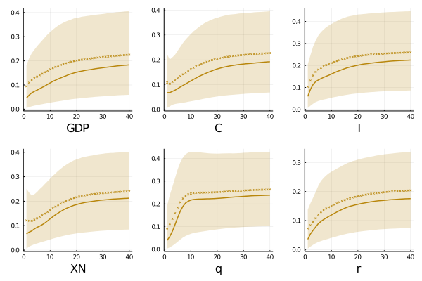

Global shocks ....
In the previous section we saw how global conditions drive small open economies fluctuations explaining a substantial portion of them. Now, we want verify if this shock is also explaining mostly of the predictability of commodity prices. If this is the case, then we can not argue that real term of trade are a sufficient statistics for the world economy and models can use them and expect a good tracing and reliable results.
To achieve that, we need to identify a second shock that is only related with commodity prices. This innovation should be at the same time: i) orthogonal with the global shocks (for a correct identification), and ii) explain most of the possible predictability of terms of trade. The last condition is imposed to ensure that our test is sensible.
As before, I will use a modified version of the common medium run identification approach, setting the following maximization problem
$$ \begin{aligned} \varphi* = & \quad \underset{\varphi}{\text{argmax}} & & \varphi' \Lambda^{(i)} \varphi \\ & \text{s.t.} & & \varphi' \Psi = 1\\ & & & \varphi'\gamma = 0 \\ & & & \varphi'(z) = 0 \ \forall \ z > n^* \end{aligned} $$ where \(\Lambda^{(i)}\) is the cumulative forecast error variance in the interval \([\overline\tau: \underline\tau ]\) of commodity-based terms of trade. As before the first condition ensures an unique identification, the last one that only external variables explain commodity prices, and the second one asks for orthogonality with respect to the global shock. The solution to this system takes the form: $$ \Lambda_{\Gamma}*\varphi = \lambda B \varphi $$ which is a generalized eigenvalue-eigenvector problem. Hence, the identified response vector is the associated with the maximum generalized eigenvalue. (the entire solution is showed in the appendix)
 In the group of emerging markets the long run contributions of only-related commodity innovations oscillate in the interval [17:24] percent of the domestic economy fluctuations. In all the cases, the pattern is increasing in the whole horizon, with the lowest instantaneous impact on financial variables - real interest rate and effective exchange rates, where only explain 3 percent in the same period of the shock.
This type of innovation have a sizable impact on investment determining close of 16 percent of its variability after 2 years while only 10 percent of the predictability on production and consumption in the same timespan. The participation of non-fundamental shocks as determinant of trade balance for these economies is contrasting with the outcome for developed markets, although in both scenarios non-fundamental commodities-related shocks explains around 21 percent of the trading forecastibility, emerging markets takes more time to be affected for them. As later will be exposed, this behave is not contraintuitive in the sense that emerging countries does not make a good work disentangling commodity price movements into their components reacting closely in both cases, while developed markets could anticipated better global shocks.
 In comparison with the results in emerging countries, we can distinguish two kinds of patterns in the contribution of non-fundamental shocks
on advanced small open economies. On one side, an almost constant participation on consumption and trade balance, around 23 percent; and the other
side, an increasing contribution more evident in exchanges rates that comes from 3 percent in the short run (instantaneous), passing through 11 percent after 2 years,
to finish explaining one fifth of its variability.
In comparison with the results in emerging countries, we can distinguish two kinds of patterns in the contribution of non-fundamental shocks
on advanced small open economies. On one side, an almost constant participation on consumption and trade balance, around 23 percent; and the other
side, an increasing contribution more evident in exchanges rates that comes from 3 percent in the short run (instantaneous), passing through 11 percent after 2 years,
to finish explaining one fifth of its variability.
The exposure of production and investment are lower than in developing markets, with a explanation power of 11 and 15 percent respectively in the long run. The former is less than half the impact of global shocks while both innovations are important on investment decision.
Global shocks ....
If you have any doubt, suggestions, or simply want to talk, you can contact with me.